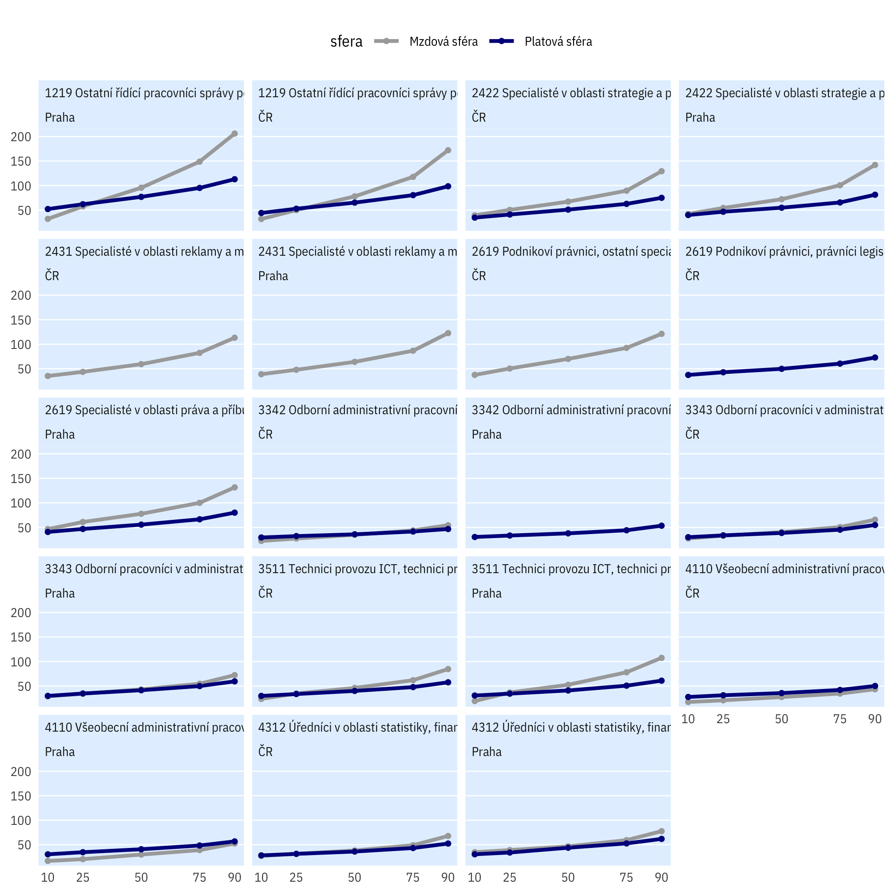
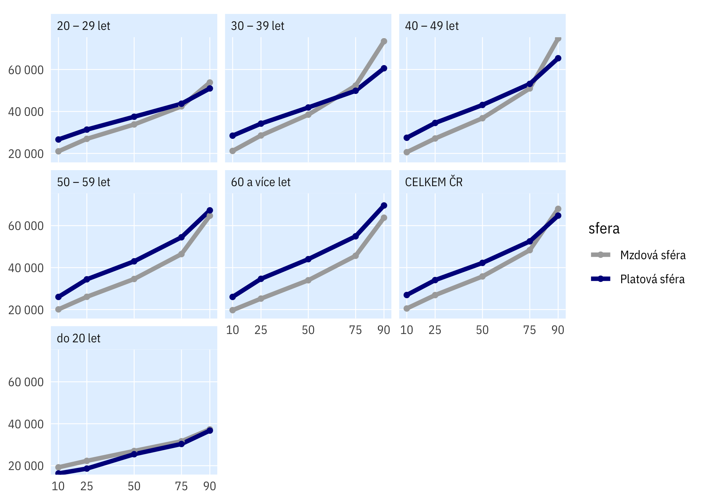
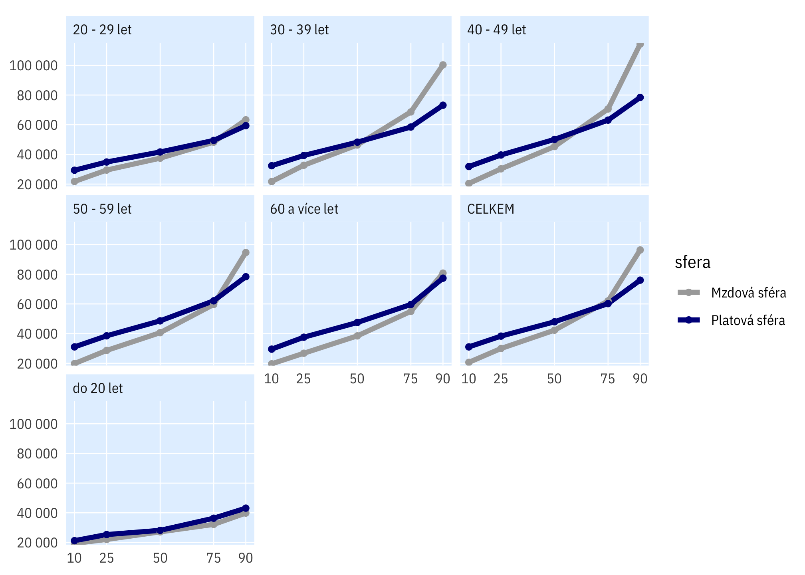
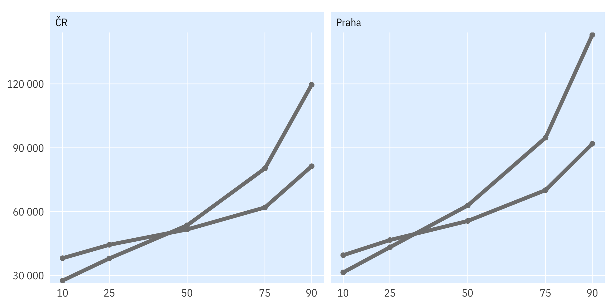

Srovnání: soukromý sektor
Zde srovnáváme celou platovou sféru s celou mzdovou, tj. zhruba veřejný vs. soukromý sektor.
Profese
Vybrané profese (čtyřmístné ISCO)
Medián a rozpětí prvního a třetího kvartilu příjmů, v tis. Kč hrubého měsíčně
Celé rozpětí i s 1. a 9. decilem

Percentily mezd
Podle věku
Česko

Praha

Jen VŠ
